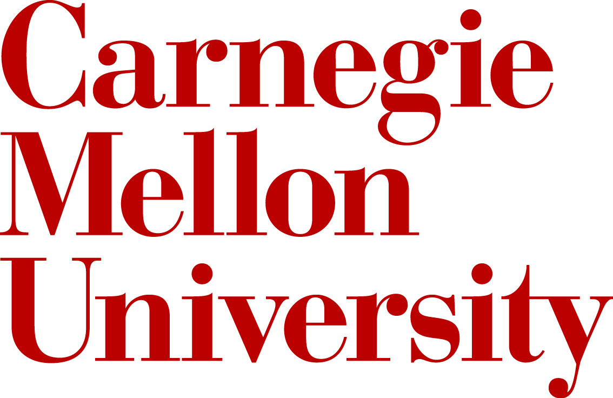
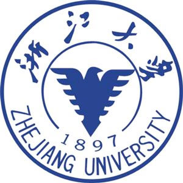

|
About
I am currently a Robotics PhD student at Georgia Institute of Techonology, working with professor Magnus Egerstedt and professor Byron Boots. My research focuses on intelligence, scalability, robustness and safety of multi-robot systems. In particular, I am working on the integration of control theory, machine learning techniques and optimization methods with applications to multi-robot systems.
Prior to joining Georgia Tech, I received my Master's degree in Robotics from Carnegie Mellon University, where I am advised by professor Katia Sycara. Before that I got my Bachelor's degree in Automation from Zhejiang University, Hangzhou China.

|
 |  |
| 2017 - Present | 2015 - 2017 | 2011 - 2015 |
Publications
-
A. Li, L. Wang, P. Pierpaoli and M. Egerstedt, "Formally Correct Composition of Coordinated Behaviors Using Control Barrier Certificates" IEEE/RSJ International Conference on Intelligent Robots and Systems (IROS2018), October, 2018 [ PDF ]
-
A. Li, W. Luo, S. Nagavalli and K. Sycara, "Decentralized Coordinated Motion for a Large Team of Robots Preserving Connectivity and Avoiding Collisions" IEEE International Conference on Robotics and Automation 2017 (ICRA2017), May, 2017 [ PDF ]
-
A. Li, M. Lewis, C. Lebiere, K. Sycara, S. Khatib, Y. Tang, M. Siedsma and D. Morrison, "A Computational Model Based on Human Performance for Fluid Management in Critical Care" In Proceedings of the IEEE Symposium Series on Computational Intelligence 2016 (SSCI2016), December, 2016 [ PDF ]
-
A. Li, W. Luo, S. Nagavalli, N. Chakraborty and K. Sycara, "Handling State Uncertainty in Distributed Information Leader Selection for Robotic Swarms" In Proceedings of the IEEE Conference on System, Man, and Cybernetics 2016 (SMC16), October, 2016 [ PDF ]
Honors
- Siebel Scholar Class of 20172016 The Siebel Scholars program was established by the Thomas and Stacey Siebel Foundation in 2000 to recognize the most talented students at the world’s leading graduate schools of business, computer science, bioengineering, and energy science. In Carnegie Mellon University, the Siebel Fellowship are awarded to only five students from School of Computer Science with academic and leadership excellence.
- The Chu Kochen Scholarship2014 The Chu Kochen Scholarship is established in memory of late president of the university Dr. Chu Ko-chen. It is widely regarded as the higherest honor at Zhejiang University. Each year, 12 (out of more than 20,000) undergraduate students from Zhejiang University are awarded with this scholarship.
- The Georgia Robotics Fellowship2017
- ICRA RAS Travel Grant2017
- GSA Conference Funding, CMU2016, 2017
- Outstanding Graduate2015 Top 5% in Zhejiang Provience
- Excellent Undergraduate Thesis Award2015 Top 10% in Zhejiang University
- The National Scholarship2013 Top 1% in Zhejiang University
- First-Class Scholarship for Outstanding Students2013, 2014 Top 3% in Zhejiang University
- Second-Class Scholarship for Outstanding Students2012 Top 8% in Zhejiang University
- Excellent Student Awards2012, 2013, 2014